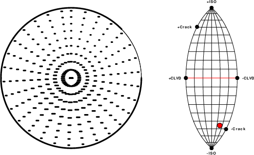

The focal mechanism was determined using broadband seismic waveforms. The location of the event and the and stations used for the waveform inversion are shown in the next figure.
|
|
|
|
The program wvfmt96 was used with good traces observed at short distance to determine the focal mechanism, depth and seismic moment. This technique requires a high quality signal and well determined velocity model for the Green functions. To the extent that these are the quality data, this type of mechanism should be preferred over the radiation pattern technique which requires the separate step of defining the pressure and tension quadrants and the correct strike.
The observed and predicted traces are filtered using the following gsac commands:
cut o DIST/3.3 -40 o DIST/3.3 +50 rtr taper w 0.1 hp c 0.03 n 3 lp c 0.10 n 3The results of this grid search over depth are as follow:
MT Program H(km) Mw Fit Mxx(dyne-cm) Myy Mxy Mxz Myz Mzz WVFMT961 1.0 288. 74. -91. 4.15 1.000 0.184E-12 1.000 1.000 0.147E-12 54.5 -0.1010000E+23 -0.1060000E+23 0.3000005E+21 0.8799995E+22 0.2799998E+22 -0.2190000E+23 WVFMT961 2.0 290. 65. -91. 4.08 0.988 0.133E-07 0.987 0.994 0.107E-07 68.8 -0.8465412E+22 -0.9118889E+22 0.3790051E+21 0.4120273E+22 0.1348096E+22 -0.1872178E+23 WVFMT961 3.0 290. 61. -91. 4.05 0.968 0.214E-07 0.967 0.984 0.172E-07 71.5 -0.7464658E+22 -0.8292816E+22 0.4225719E+21 0.2987755E+22 0.9642471E+21 -0.1741766E+23 WVFMT961 4.0 291. 59. -91. 4.03 0.944 0.283E-07 0.942 0.972 0.227E-07 73.1 -0.6713553E+22 -0.7515828E+22 0.4639834E+21 0.2481360E+22 0.7933492E+21 -0.1647908E+23 WVFMT961 5.0 291. 58. -91. 4.01 0.918 0.343E-07 0.915 0.958 0.275E-07 75.8 -0.6053040E+22 -0.6824195E+22 0.4018019E+21 0.2201268E+22 0.6953245E+21 -0.1570855E+23
The best solution is
WVFMT961 1.0 288. 74. -91. 4.15 1.000 0.184E-12 1.000 1.000 0.147E-12 54.5 -0.1010000E+23 -0.1060000E+23 0.3000005E+21 0.8799995E+22 0.2799998E+22 -0.2190000E+23
The complete moment tensor decomposition using the program mtinfo is given in the text file MTinfo.txt. (Jost, M. L., and R. B. Herrmann (1989). A student's guide to and review of moment tensors, Seism. Res. Letters 60, 37-57. SRL_60_2_37-57.pdf.
The P-wave first motion mechanism corresponding to the best fit is
|  |
|
|
The best fit as a function of depth is given in the following figure:

|
|
|
The comparison of the observed and predicted waveforms is given in the next figure. The red traces are the observed and the blue are the predicted. Each observed-predicted component is plotted to the same scale and peak amplitudes are indicated by the numbers to the left of each trace. A pair of numbers is given in black at the right of each predicted traces. The upper number it the time shift required for maximum correlation between the observed and predicted traces. This time shift is required because the synthetics are not computed at exactly the same distance as the observed and because the velocity model used in the predictions may not be perfect. A positive time shift indicates that the prediction is too fast and should be delayed to match the observed trace (shift to the right in this figure). A negative value indicates that the prediction is too slow. The lower number gives the percentage of variance reduction to characterize the individual goodness of fit (100% indicates a perfect fit).
The bandpass filter used in the processing and for the display was
cut o DIST/3.3 -40 o DIST/3.3 +50 rtr taper w 0.1 hp c 0.03 n 3 lp c 0.10 n 3

|
|
|
A check on the assumed source location is possible by looking at the time shifts between the observed and predicted traces. The time shifts for waveform matching arise for several reasons:
Time_shift = A + B cos Azimuth + C Sin Azimuth
The time shifts for this inversion lead to the next figure:

The derived shift in origin time and epicentral coordinates are given at the bottom of the figure.